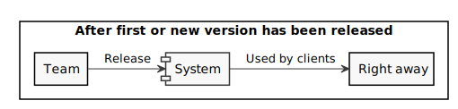
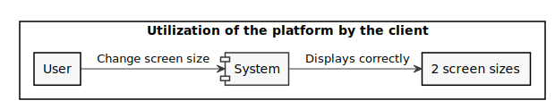
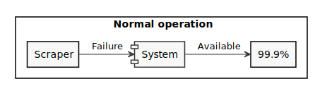
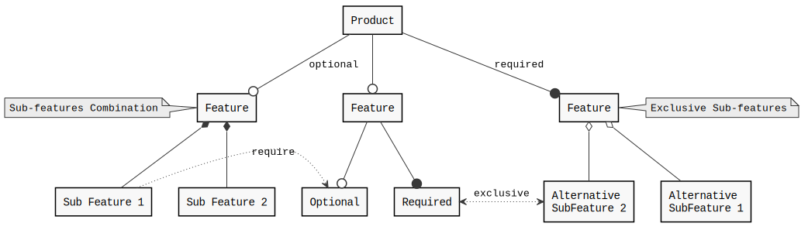
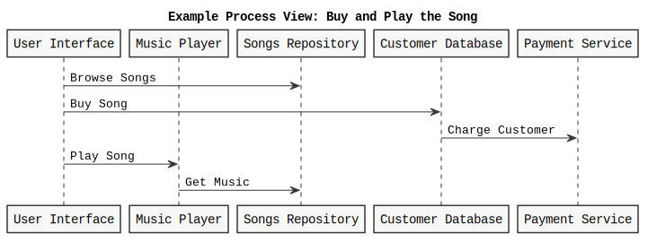
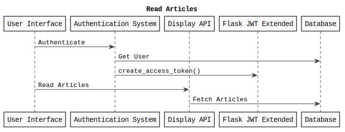
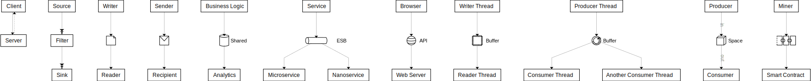
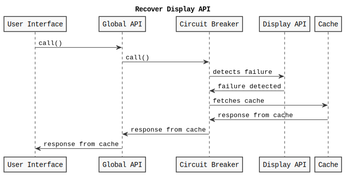
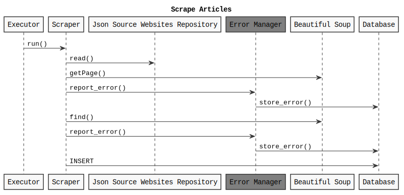

Getting started
You will use Markdown, PlantUML, architectural decision records, feature models and connector views to describe a software architecture model about your own project.
This document will grow during the semester as you sketch and refine your software architecture model.
When you are done with each task, please push so we can give you feedback about your work.
We begin by selecting a suitable project domain.
0. Domain Selection
Submit the name and brief description (about 100 words) of your domain using the following vision statement template:
For [target customers]
Who [need/opportunity/problem]
The [name your project]
Is [type of project]
That [major features, core benefits, compelling reason to buy]
Unlike [current reality or competitors]
Our Project [summarize main advantages over status quo, unique selling point]
Please indicate if your choice is:
- a project you have worked on in the past (by yourself or with a team)
- a project you are going to work on this semester in another lecture (which one?)
- a new project you plan to build in the future
- some existing open source project you are interested to contribute to
The chosen domain should be unique for each student.
Please be ready to give a 2 minute presentation about it (you can use one slide but it's not necessary)
Project Name: Seismo Scraping
Project Type: Bachelor thesis project I worked on alone last year, which is also a project that is to be continued now with a team
Context/Additional Information: The FSVO is responsible to promote the health and well-being of humans and animals. Among many other tasks, FSVO produces a monthly newsletter called Seismo Info, containing a list of articles presenting some interesting and important information on food safety. Link to get the Seismo Info of January 2023 as an example: https://www.blv.admin.ch/dam/blv/en/dokumente/lebensmittel-und-ernaehrung/publikationen-forschung/seismo-info-2023-1.pdf.download.pdf/Seismo Info 01 2023_EN.pdf Until a few month ago, FSVO analysed manually a whole list of websites every morning, to check if some interesting articles were published, which was a very time consuming task.
Vision Statement: For the FSVO (Federal Food Safety and Veterinary Office) Who need an automated solution to get everyday a list of all new food safety-related coming from some specified reference websites. The Seismo Scraping project Is a web platform That displays everyday new published articles, allows the user to rate those articles, store them, and offers the possibility to filter them. As the project was mandated by the FSVO, and developed especially for them, there is not really some competitors. Our project saves the people of the FSVO time and energy by removing the task of manually going through a long list of websites.
1. Architectural Decision Records
Software architecture is about making design decisions that will impact the quality of the software you plan to build.
Let's practice how to describe an architectural decision. We will keep using ADRs to document architectural decisions in the rest of the model.
Use the following template to capture one or more architectural design decisions in the context of your project domain
Architectural Decision Record Template
ADR #0 (Template)
- What did you decide?
Give a short title of solved problem and solution
- What was the context for your decision?
What is the goal you are trying to achieve?
What are the constraints?
What is the scope of your decision? Does it affect the entire architecture?
- What is the problem you are trying to solve?
You may want to articulate the problem in form of a question.
- Which alternative options did you consider?
List at least 3 options
- Which one did you choose?
Pick one of the options as the outcome of your decision
- What is the main reason for that?
List the positive consequences (pros) of your decision:
- quality improvement
- satisfaction of external constraint
If any, list the negative consequences (cons)
- quality degradation
Decision 1
ADR #1
Solution in the form of a website
Context
Clients need a way of getting automatically new articles related to food safety every day so that they do not have to do it manually anymore. The choice of the form of the product will influence the whole system and will influence which technologies to use.
One constraint is that people working at the FSVO can't download anything easily on their work computer for security reasons. Also, the product should not be made available for everybody, but only for the FSVO.
- Problem
In what form should the customer's needs be met?
- Alternatives
- Website
- Software to download on the devices at work
- Software to download on private devices (tablet, mobile phone)
- Choice
The website alternative has been chosen.
- Reason
The website alternative has been chosen as it is the one creating the least difficulties, both in terms of administration (alternative 2) and development (alternative 3). Indeed, if option 3 had been chosen, it would have been necessary to ensure that the program was compatible with all types of devices and operating systems.
Also, in order for the product not to be available for everybody, a login is required to enter the website, but no possibility to register. That way, only authorized people from the FSVO can access it, and efficiency won’t be reduced because of the traffic of other people.
Advantages:
- Respects constraints
- Available from everywhere
- Web development architectures are well-known
- No need to take into account many types of devices or operating systems.
Decision 2
ADR #2
Use a semi-custom scraper implementation
Context
As the web platform Seismo Scraping displays everyday recent articles from various websites, the system should be able to scrape automatically and everyday those websites to get the articles. We need to find a technology to compute that, giving us enough flexibility to scrape many different websites without having to write one specific script for each. Also, as at the time the project had a certain deadline, the solution had to be in place rather quickly.
This decision affects the whole architecture of the scraping part. It does not affect the rest of the backend and the frontend part though.
- Problem
Which scraping solution should be used to get the desired information on each website?
- Alternatives Here are the three scraper’s implementations that were considered as an alternative.
- Off-the-shelf implementations: existing commercial software suites and services, offering a ready-to-user scraper. Example: Octoparse
- Semi-custom implementations: code is written by the user, using some existing standardized libraries provided in many programming languages. Example: Beautiful Soup
- Fully custom implementations: developed entirely by the user, including the custom libraries.
- Choice
The semi-custom implementation was chosen.
- Reason
The semi-custom implementation has been selected as it provides more flexibility than an off-the-shelf implementation. The scraper is then developed especially to fulfill the needs of the project, but without having to write the libraries from scratch. A fully custom implementation could have provided more flexibility but it would not have respected the deadline constraint, and the scope of the project does not require some very specific stuffs unavailable in already existing libraries.
Advantages of the selected alternative:
- No expenses
- Flexibility
- Quick to implement
- Next Decision:
Which library/framework should we use?
Decision 3
ADR #3
Use the Beautiful Soup library
Context
In the previous decision record, we chose to develop the scraping part of the project using a library. We now have to choose one library to work with.
Again, we always have the deadline constraint, so we would like to find a library with a fast learning curve and a good documentation.
- Problem
With which library should we develop the scraping part?
- Alternatives
- Beautiful Soup: open-source Python library
- Scrapy: complete framework. It provides tools to quickly extract data from websites, analyze it, and dave it in the desired structure and format
- Selenium: web driver which was at first created for automated web testing but is also used for web scraping.
- Choice
Beautiful Soup has been selected
- Reason
Scrapy and Selenium are both more complex to use, and they both require more resources than Beautiful Soup. Also, Scrapy has a pretty light documentation.
Advantages of the selected alternative:
- Poorly formed document forgiving
- Encoding detection
- Easy to learn
Disadvantage:
- Slower speed
Decision 4
ADR #4
Database structured to allow many accounts
Context
The Seismo Scraping tool is intended uniquely for the FSVO office, and especially for the few people that work on the Seismo Info newsletter. So, all users of the platform work towards one specific goal, and all information will eventually be shared between them. The goal is to find the most convenient alternative for the users.
This decision impacts principally the structure of the database (and also the workflow of the users but it does not take part of the architecture).
- Problem
Should the system provide a possibility for different users to grade individually the articles? Should it provide a way to collaborate between users or share information?
- Alternatives
- Creation of one unique account for everyone. Everyone sees the same, articles are graded the same way for everyone.
- Creation of an account for each user, in which all grades are dependent on the user. The same article can be rated differently depending on the user
- Creation of an account for each user, and creation of groups of users. Each user inside the same group sees the same. Articles are graded the same way for everyone inside a group.
- Choice
The chosen alternative is the one proposing to create an account for everyone with personalized articles rating for each user (alternative 2).
- Reason
By discussing with the clients, they made it clear that the most convenient thing for them was to have some individual accounts so that they could all express their opinion on the articles. Moreover, users can select the reference sites from which they want to see the articles, so there is still a possibility to divide the work. Also, as only few people work on the articles selection, it would not have made sense to implement a whole user group feature, for at the end only get one single group.
Advantage:
- Avoids confusion (e.g. the fact that an article's rating is changed several times because of a disagreement, or that an article that one person might have found interesting was previously trashed by another user.)
Disadvantage:
- For now, people cannot directly confront their opinion on the platform which would be a great feature
2. Quality Attribute Scenario
Pick a scenario for a specific quality attribute. Describe it with natural language.
Refine the scenario using the following structure:

Stimulus: condition affecting the system
Source: entity generating the stimulus
Environment: context under which stimulus occurred (e.g., build, test, deployment, startup, normal operation, overload, failure, attack, change)
Response: observable result of the stimulus
Measure: benchmark or target value defining a successful response
Example Scenario
Quality: Recoverability
Scenario: In case of power failure, rebooting the system should take up to 20 seconds.
Scenario 1
Quality: Learnability
Scenario: 5 minutes should be sufficient for a new user to become familiar with the platform and use it the right way.
Scenario 2
Quality: Deployability
Scenario: A simple push in the production branch allows to automatically deploy a new version in less than 3 minutes.
Scenario 3
Quality: Scalability
Scenario: Even with bigger amount of data, the response time of the server to fetch more article data will remain constant, between 20 and 50 ms.
Scenario 4
Quality: Customizability
Scenario: There would the possibility to specialize the system for a total different client, by changing the entries of the websites to scrape. Only one file containing the websites data would have to change.
Scenario 5
Quality: Time to market
Scenario: After an update, a new version, or even after the very first version, it can be given right away to the users, and we can start learning from them after a week of testing.
Scenario 6
Quality: Compatibility
Scenario: The interface of the web platform should be sufficiently responsive to be correctly and nicely displayed on different screen sizes (large screens, tablets).
Scenario 7
Quality: Availability
Scenario: The system remains available 99.9% of the time. Even in case of a failure on the scraper side (exceptionally, fails to retrieve the desired information), it remains available, and the user does not even notice the failure.
1-6: ok
7: Overlap between Environment and Source/Stimulus.
3. Quality Attribute Tradeoff
Pick a free combination of two qualities on the map and write your name to claim it.
Then write a short text giving an example for the tradeoff in this assignment.
Portability vs. Performance (Example)
Developing an app natively for each OS is expensive and time consuming, but it benefits from a good performance. Choosing a cross-platform environment on the other hand simplify the development process, making it faster and cheaper, but it might suffer in performance.
Security vs. Usability
Including a multi-authentication system allows to guarantee a better security of data privacy. But on the other hand, this adds extra steps to the authentication process, which can sometimes be annoying. For the Seismo Scraping project, as the data inside each account is not that sensible, usability has been preferred over privacy, and the authentication is a simple login with email and password.
"Security of Data Privacy" (Authentication is often considered part of Security and would conflict with Privacy as it removes user anonymity)
Reusability vs. Performance
A reusable software component offers a great advantage, as it can be reused in other softwares, which can save time and resources in the future. But such a component might not be as performant as another one designed specifically for a single software.
Usability vs. Performance
A software designed for being very usable to all users, might be less performant for more expert users looking for more complexity. A perfect example is the file systems which are very usable for non-expert users, but not as efficient as the command line terminal.
4. Feature Modeling
In the context of your chosen project domain, describe your domain using a feature model.
The feature model should be correctly visualized using the following template:


If possible, make use of all modeling constructs.
All features are implemented in the Seismo Scraping project, apart from the session authentication (token based authentication has been chosen over session authentication), the mobile phones screen size, and the rating system on a scale from 1 to 10 (again, a star rating system has been prefered over a numerical one). Also, the personalized color theme is not implemented.
5. Context Diagram
Prepare a context diagram to define the design boundary for your project.
Here is a PlantUML/C4 example to get started.
Make sure to include all possible user personas and external dependencies you may need.
6. Component Model: Top-Down
Within the context of your project domain, represent a model of your modular software architecture decomposed into components.
The number of components in your logical view should be between 6 and 9:
- At least one component should be further decomposed into sub components
- At least one component should already exist. You should plan how to reuse it, by locating it in some software repository and including in your model the exact link to its specification and its price.
- At least one component should be stateful.
The logical view should represent provide/require dependencies that are consistent with the interactions represented in the process view.
The process view should illustrate how the proposed decomposition is used to satisfy the main use case given by your domain model.
You can add additional process views showing how other use cases can be satisfied by the same set of components.
This assignment will focus on modularity-related decisions, we will worry about deployment and the container view later.
Here is a PlantUML example logical view and process view.
Logical View
Process Views

7. Component Model: Bottom-Up
Within the context of your project domain, represent a model of your modular software architecture decomposed into components.
To design this model you should attempt to buy and reuse as many components as possible.
In addition to the logical and process views, you should give a precise list to all sources and prices of the components you have selected to be reused.
Write an ADR to document your component selection process (indicating which alternatives were considered).
Logical View
BeautifulSoup4 : https://pypi.org/project/beautifulsoup4/ Flask-Mail : https://pypi.org/project/Flask-Mail/ Flask-JWT-Extended: https://pypi.org/project/Flask-JWT-Extended/ MySQL Database: https://www.mysql.com/downloads/
Process Views
ADR
ADR 1
Use the Beautiful Soup library
Context
As developing a custom scraper from scratch is not part of the project, a scraping library has to be chosen. Ideally, we would like to find a library with a fast learning curve and a good documentation.
- Problem
With which library should we develop the scraping part?
- Alternatives
- Beautiful Soup: open-source Python library
- Scrapy: complete framework. It provides tools to quickly extract data from websites, analyze it, and dave it in the desired structure and format
- Selenium: web driver which was at first created for automated web testing but is also used for web scraping.
- Choice
Beautiful Soup has been selected
- Reason
Scrapy and Selenium are both more complex to use, and they both require more resources than Beautiful Soup. Also, Scrapy has a pretty light documentation.
Advantages of the selected alternative:
- Poorly formed document forgiving
- Encoding detection
- Easy to learn
Disadvantage:
- Slower speed
ADR 2
Use Flask-Mail extension to send users mails
Context
To allow the password reset feature, the system needs to be able to send mails to the users.
- Problem
With solution should we use to send emails as easily as possible?
- Alternatives
- Flask-Mail: extension of Flask to send mails
- smtplib: python module to set up a secure SMTP connection
- Choice
Flask-Mail has been selected
- Reason
As Flask is the framework used to develop the backend, it is more convenient to directly use the existing extension from Flask.
Advantages of the selected alternative:
- We do not have to configure the server ourself
8. Interface/API Specification
In this iteration, we will detail your previous model to specify the provided interface of all components based on their interactions found in your existing process views.
choose whether to use the top down or bottom up model. If you specify the interfaces of the bottom up model, your interface descriptions should match what the components you reuse already offer.
decide which interface elements are operations, properties, or events.
Get started with one of these PlantUML templates, or you can come up with your own notation to describe the interfaces, as long as it includes all the necessary details.
The first template describes separately the provided/required interfaces of each component.
The second template annotates the logical view with the interface descriptions: less redundant, but needs the logical dependencies to be modeled to show which are the required interfaces.

OpenAPI Tree

9. Connector View
Extend your existing models introducing the connector view
For every pair of connected components (logical view), pick the most suitable connector. Existing components can play the role of connector, or new connectors may need to be introduced.

Make sure that the interactions shown in the process views reflect the primitives of the selected connector
Connector View
The executor is a new kind of connector which runs the scraper everyday at a specific hour.
Process View
ADR
Connector Decision
Use a shared database
Context
We need a way to store the data the scraper gets from the web, and alo the data coming from the user interface (user data, grades user assigned to articls, ...).
- Problem
Should data coming from the scraper and data coming from the user interface be linked and how?
- Alternatives
- Shared Database
- Two different databases - one for the articles data and one for the users data
- Choice
The shared database alternative has been chosen.
- Reason
As articles fetched by the scraper need to be displayed on the user interface and that users will directly interact with them, it makes sense to have all the data in one unique shared database.
Advantages:
- All data in one unique location
- No duplication of data
10. Adapters and Coupling
- Highlight the connectors (or components) in your existing bottom-up design playing the role of adapter. (We suggest to use the bottom-up design since when dealing with externally sourced components, their interfaces can be a source of mismatches).
- Which kind of mismatch** are they solving?
- Introduce a wrapper in your architecture to hide one of the previously highlighted adapters
- Where would standard interfaces play a role in your architecture? Which standards could be relevant in your domain?
- Explain how one or more pairs of components are coupled according to different coupling facets
- Provide more details on how each adapter solves the mismatches identified using pseudo-code or the actual code
- How can you improve your architectural model to minimize coupling between components? (Include a revised logical/connector view with your solution)
** If you do not find any mismatch in your existing design we suggest to introduce one artificially.
Hints
(1) Should we find cases where two components cannot communicate (and are doing it wrongly) and highlight they would need an adapter?, or cases where we have already a "component playing the role of adapter in the view" and highlight only the adapter?
Both are fine. We assumed that if you draw a dependency (or a connector) the interfaces match, but if you detect that the components that should communicate cannot communicate then of course introduce an adapter to solve the mismatch
(2) Please show the details about the two interfaces which do not match (e.g., names of parameters, object structures) so that it becomes clear why an adapter is needed and what the adapter should do to bridge the mismatch
(5-6) These questions are about the implications on coupling based on the decisions you documented in the connector view. Whenever you have a connector you couple together the components and different connectors will have different forms of coupling
For example, if you use calls everywhere, do you really need them everywhere? is there some pair of components where you could use a message queue instead?
Regarding the coupling facets mentioned in question 5. You do not have to answer all questions related to "discovery", "session", "binding", "interaction", "timing", "interface" and "platform" (p.441, Coupling Facets). Just the ones that you think are relevant for your design and by answering them you can get ideas on how to do question 6.
1.
2.
We need an adapter between the Scraper and the Shared Database, to format the date scraped from the web, to the right format in order to be stored in the shared database. Indeed the SQL DATE has the format YYYY-MM-DD, but not every date taken from the web has this format, that's why an adapter is needed between the two.
Another needed adapter is between Flask Mail and the Password Reset Component. Indeed, the Password Reset Component needs to send a mail asynchronously, because we do not want to wait until the message is sent, but the send() method of Flask Mail is synchronous. So we need an Async2Sync adapter.
3.
4.
A standard interface could be useful in my domain to take a date in whatever format and transform it in the DATE SQL format, so that the storage of the data in the database could be done in an easier and cleaner way. However, I did not find any standard doing it online.
5.
Coupling facets between User Interface Component and Display Component
- Discovery: location of the component is written in a configuration file
- Interaction: the client must directly connect to the component
- Timing: the client and the component must be available at the smae time -> connector is synchronous
- Session: the UI and Display components do not share any session state. Each request/message is independent
6.
Date Adapter:
def formatDate(self, nonFormattedDate):
# Formatted date should be "AAAA-MM-DD"
try:
dateRegex1 = re.compile(self.site.dateRegex1)
if dateRegex1.search(nonFormattedDate) is not None:
date = dateRegex1.search(nonFormattedDate)
year = date.group()[self.site.year1a:self.site.year1b]
if self.site.months:
month = months(date.group()[self.site.month1a:self.site.month1b])
else:
month = date.group()[self.site.month1a:self.site.month1b]
day = date.group()[self.site.day1a:self.site.day1b]
elif self.site.dateRegex2 is not None:
dateRegex2 = re.compile(self.site.dateRegex2)
date = dateRegex2.search(nonFormattedDate)
year = date.group()[self.site.year2a:self.site.year2b]
if self.site.months:
month = months(date.group()[self.site.month2a:self.site.month2b])
else:
month = date.group()[self.site.month2a:self.site.month2b]
day = "0"+date.group()[self.site.day2a:self.site.day2b]
formattedDate = year+'-'+month+'-'+day
except:
return None
pass
#print(formattedDate)
return formattedDate
Async2Sync Adapter:
def send_async_email(app, msg):
with app.app_context():
mail.send(msg)
def send_email(subject, sender, recipients, text_body, html_body):
msg = Message(subject, sender=sender, recipients=recipients)
msg.body = text_body
msg.html = html_body
Thread(target=send_async_email, args=(app, msg)).start()
@app.route('/forget', methods = ['POST'])
def forgot_password():
host_url = app.config['HOST_URL']
email = request.json['email']
url = host_url + '/reset-password'
user = User.query.filter_by(email=email).first()
if user is None:
return jsonify({"msg": "email does not exist in db"})
expires = timedelta(hours=24)
reset_token = create_access_token(str(user.id), expires_delta=expires)
send_email('Reset Your Password',
sender=app.config['MAIL_USERNAME'],
recipients=[user.email],
text_body=render_template('email/reset-password.txt',
url= url + '?token=' + reset_token),
html_body=render_template('email/reset-password.html',
url=url + '?token=' + reset_token))
return jsonify({"msg": "password has been reset successfully"})
7.
I did not find any coupling that could be minimized without altering the system in the existing logical view
11. Physical and Deployment Views
a. Extend your architectural model with the following viewpoints:
Physical or Container View
Deployment View
Your model should be non-trivial: include more than one physical device/virtual container (or both). Be ready to discuss which connectors are found at the device/container boundaries.
b. Write an ADR about which deployment strategy you plan to adopt. The alternatives to be considered are: big bang, blue/green, shadow, pilot, gradual phase-in, canary, A/B testing.
c. (Optional) Prepare a demo of a basic continuous integration and delivery pipeline for your architectural documentation so that you can obtain a single, integrated PDF with all the viewpoints you have modeled so far.
For example:
- configure a GitHub webhook to be called whenever you push changes to your documentation
- setup a GitHub action (or similar) to build and publish your documentation on a website
Container View
Deployment View
ADR
Deployment Decision
The Blue/green deployment strategy has been adopted
Context
A deployment strategy has to be chosen in order to deploy the system in a safe way. Also, as the project is at the beginning a prototype, all the requested source websites were at the beginning not present. So, as the user need them, all users would like to see the updates as soon as possible.
- Problem
Which deployment strategy should be used to deploy the system?
- Alternatives
- Big Bang
- Blue/green
- Shadow
- Pilot
- Gradual phase-in
- Canary
- A/B testing
- Choice
The Blue/green alternative has been chosen
- Reason
As very few users are using the system, it does not make any sens to use alternatives as Pilot, A/B Testing, Canary or gradual phase-in. The prefered alternative is thus for all the users to directly see all the new changes. Also, as we have the constraint that the users would like to get the updates as soon as possible (for now) the shadow alternative is not chosen. Then, the blue/green alternative is preferred over the big bang one, so that we could switch to the previous version in case of problems.
Demo
12. Availability and Services
The goal of this week is to plan how to deliver your software as a service with high availability.
- If necessary, change your deployment design so that your software is hosted on a server (which could be running as a Cloud VM). Your SaaS architecture should show how your SaaS can be remotely accessed from a client such as a Web browser, or a mobile app
- Sketch your software as a service pricing model (optional)
- How would you define the availability requirements in your project domain? For example, what would be your expectation for the duration of planned/unplanned downtimes or the longest response time tolerated by your clients?
- Which strategy do you adopt to monitor your service's availability? Extend your architecture with a watchdog or a heartbeat monitor and motivate your choice with an ADR.
- What happens when a stateless component goes down? model a sequence diagram to show what needs to happen to recover one of your critical stateless components
- How do you plan to recover stateful components? write an ADR about your choice of replication strategy and whether you prefer consistency vs. availability. Also, consider whether event sourcing would help in your context.
- How do you plan to avoid cascading failures? Be ready to discuss how the connectors (modeled in your connector view) impact the reliability of your architecture.
- How did you mitigate the impact of your external dependencies being not available? (if applicable)
1.
In my case the software is alreay hosted on a server. The clients can access it from a web browser.
2. Service Pricing Model
The service would have a subscription-based pricing, with two different pricings depending on the number of source websites. The normal version goes until 10 source websites. Starting at more than 10 source websites, the user would have to pay the premium version.
- Normal version : 20 CHF/month -> up to 10 source websites
- Premium version : 80 CHF/month -> unlimited number of source websites
3. Availability Requirements
- The system must be available each day of the week, and especially in the morning at this is the time where the FSVO people will use it
- Also, it should be available/running each day around midnight, as this is the time, in which the scraper script is run. So if the system is down at this time, the users won't see the new articles the day after.
- If the system should have downtimes, those downtimes should be predicted in advance, so that the users could know it in advance.
- The response time should short. As a lot of new articles are displayed every day, if it takes each time 2 second to treat each article, it will take too much time to treat all articles, and the user experience won't be nice.
4. Monitor the Service's Availability
Monitor Decision ADR
A watchdog monitor has been chosen
Context
As the clients need to use the service everyday, we need to ensure its availability. To keep track of the availability we can use an automated system that continuously check whether the service is available or not.
- Problem
Which strategy to adopt to monitor the service's availability ?
- Alternatives
- Watchdog
- Heartbeat
- Choice
The Watchdog alternative has been chosen
- Reason
The watchdog alternative has been chosen because it behaves the same way as the clients, and make the same calls as them. Also, using the watchdog allows us to get the response time of the service which is an important information. For example, at the very beginning of the service, it did not have a pagination system, so at a certain point, the request to get all the articles took too much time. This is the kind of situation that can easily be spotted right away using a watchdog.
5. Stateless component goes down
We consider here the case in which the Display API is not available. A circuit breaker can be used to immediately detect that it is not available. Then, a previous version is fetched from the cache.
6. Stateful components recovering
Recovery Decision ADR
A synchronous replication strategy has been chosen
Context
To prevent the loss of the data of stateful components, those components can be replicated. That way, even if something goes wrong, important data is not lost.
- Problem
Which strategy to adopt to replicate stateful components ?
- Alternatives
- Synchronous Replication
- Asynchronous Replication
- Choice
The synchronous replication alternative has been chosen
- Reason
In some situations availability will be preferred over consistency (as discussed after), but when possible the system should be as consistent as possible. The disadvantage of synchronous replication is that the write operations take longer than with asynchronous replication, but at least all replicas are consistent, all the stored articles are also stored in the others replicas.
In general (not in the context of the replication decision), even if consistency is important in my domain (because if the users never see new articles, the system is practically useless), availability is preferred over consistency. Indeed, if for example one external source website is down and that the data cannot be scraped from it, the other data are still displayed. The system will be available but not completely consistent as some data are missing.
Event Sourcing could effectively be useful to reproduce the way articles were graded by each users. However, it would not be useful to populate the database with the new articles.
7. Avoiding cascading failures
As most of my connectors are synchronous, if a component goes down, a large part of the architecture is affected. For example, if the db goes down, the whole system is affected. I thus need to add redundancy in my architecture (typically the database, which is the most important component) to prevent this from happening.
8. Mitigating the impact of non available external dependencies
In case the database is not available, redundancy is used so that it does not impact the whole system.
In case one of the source website is down, the scraper just accepts the fact that the website is not reacheable and continue with the scraping of the other websites without impacting the whole system. -> In this case typically, availability is preferred over consistency.
In case BeautifulSoup is not available, once again, the scraper accepts the fact that it is not able to scrape anything from the web, and thus does not scrape anything. But the rest of the system is not impacted. Again the system is available but not consistent.
13. Flexibility
Only dead software stops changing. You just received a message from your customer, they have an idea. Is your architecture ready for it?
Pick a new use case scenario. Precisely, what exactly do you need to change of your existing architecture so that it can be supported? Model the updated logical/process/deployment views.
Pick another use case scenario so that it can be supported without any major architectural change (i.e., while you cannot add new components, it is possible to extend the interface of existing ones or introduce new dependencies). Illustrate with a process view, how your previous design can satisfy the new requirement.
Change impact. One of your externally sourced component/Web service API has announced it will introduce a breaking change. What is the impact of such change? How can you control and limit the impact of such change? Update your logical view
Open up your architecture so that it can be extended with plugins by its end-users. Where would be a good extension point? Update your logical view and give at least one example of what a plugin would actually do.
Assuming you have a centralized deployment with all stateful components storing their state in the same database, propose a strategy to split the monolith into at least two different microservices. Model the new logical/deployment view as well as the interfaces of each microservice you introduce.
1. New use case scenario
The new use case scenario is more destinated to the developers of the systems than to the clients. It is about introducing a system of regognition and management of errors in the scraping procedure. Indeed, it can be that some articles that should have been present in the system actually are not, due to an error during the scraping (scraper not able to scrape an article, error 429, ...). So, basically, the system would store in the database all the different kinds of errors happening, for which articles/websites, and would allow to see those errors on the user interface too.
2. Supported use case scenario
The new use case is to add a new source website directly from the user interface, so that the system would not have to be redeployed, each time a new webiste is added. So, basically, the Json Source Website Repository file is made editable from the user interface.
3. Breaking Change of an external component
The most important external component of the system is BeautifulSoup. In case of a breaking change the system has to adapt, else new articles cannot be scraped anymore. One solution would be to directly change the script to adapt the changes of the library. Alternatively, an adapter could be introduced between the scraper and BeautifulSoup so that the scraper itself do not have to change. Only the adapter changes, and we would not have to do the same changes multiple times.
4. Plugins
The extension point is set to the Json Writer in the Actions API. The idea is to have a plugin which would use the Json Writer to add new sources website automatically. By automatically, I mean that the user would not have to write by himself the data that BeautifulSoup need to add a new website, but would only provide the name and url of the website, the plugin would then automatically add the webiste into the json file.